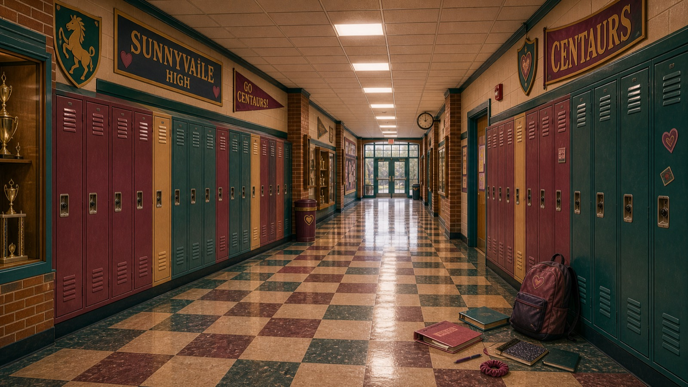
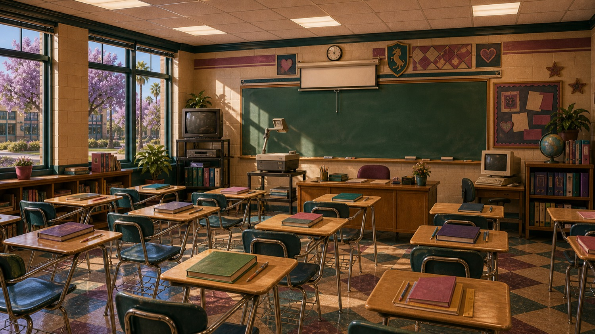
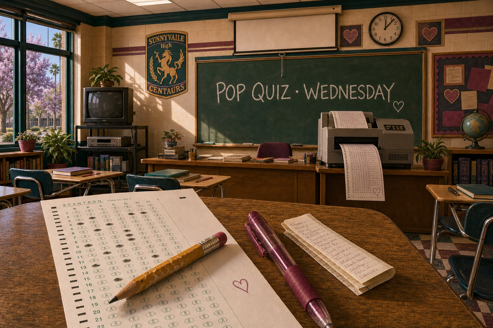
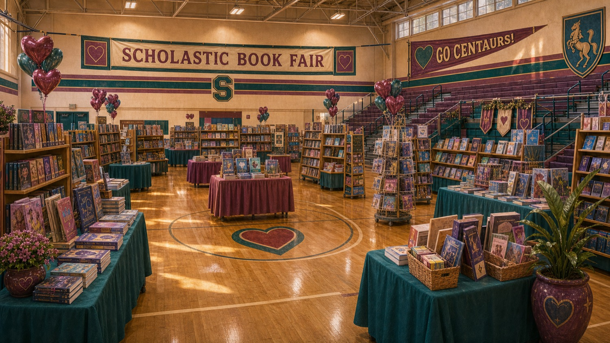

A/V
AV Classroom
Written previews open · tapes in production
BUILDING CANDIDATE · LOCAL REVIEW ONLY
Return to the current High pageSchoolhouse Road · SUNNYVAiLE
Class previews on the AV cart · Season 1 textbooks · Pop Quizzes · Home of the CENTAURS. Where LAiDIES practice lives. Show up, inspect the explanation, try again.
Three places teach you AI in town, and they do different jobs. The Chick Flicks gives you the episode. The LIBRAiRY is where you look it up. SUNNYVAiLE High is for demonstrations and practice. The written class previews are open; the class tapes are still in production, so there is nothing to press play on yet.
Start in Room 101Pick one of the available Episode quizzes, answer every question, then inspect what each answer means and where to reread it. The quiz checks recall and judgment; it does not certify mastery.

TODAY AT HIGH
THE CORRIDOR
Each door has a real action or says exactly why it cannot offer one yet.
Written previews open · tapes in production
Wednesdays. Pencils ready.
Quiz attempts saved on this device
A playful title from local quiz scores
Seven textbooks, one intro curriculum
In the gym every four weeks
Read the supported result on this device
Ideas in planning · nothing enrolled yet

A/V CLASSROOM
Written previews open · tapes in production
Reading the class register…
No class tapes are available yet. A written preview is not a finished class, a play event or a completion.
OFFICE OF THE REGISTRAR
Completed attempts appear on a playful device-local scorecard. They can disappear when browser data is cleared and are not proof of mastery or cross-device progress.
Reading this device…

THE YEARBOOK OFFICE
A playful title from local quiz scores.
No local title yet.
Just for fun; it is not a ranking, credential or judgment of capability.
Open the current Yearbook experienceTHE GYM
In the gym every four weeks.
The current inventory is stocking soon. Do not spend, reserve or expect fulfilment from this candidate.
Open the Book Fair catalogueA local Clip code is not account money. Any entitlement, reservation, delivery, refund or cross-device result remains a separate Platform proof.
